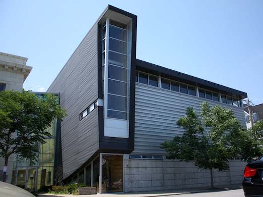

About Tyler
A lifelong Chicagoan, Tyler London has always had a knack for sharing a good story.
Her passion followed into her teens where she then went to Missouri to attend Lincoln University to study journalism.
After graduating, Tyler returned to Chicago to become an associate editor at a local newspaper and later moved into public relations where she worked with brands including Burger King and Hasbro Brands while juggling editorial freelance responsibilities for various magazines.
She currently serves as a Communications Manager with Toyota Automotive.
About Daniel
Born in Chicago, raised in Pittsburgh, Daniel spent the majority of his formative years in the arts.
As computing advanced at a breath-taking pace, during the dot-com boom, he quickly developed an interest technology. This curiousity ultimately led him to the University of Pittsburgh where he studied Computer Science and Japanese.
Following the dot-com bust, Daniel decided that it was time to set his sights onto greener pastures - and move back to Chicago. Since then, Daniel has worked for several notable tech firms including Aon Hewitt, eNeighborhoods, Orbitz.com, and Nextag.com.
He is currently serving as a Sr. User Experience Engineer for The Textura Corporation.
Our Story
Love in the Club?
The night before Thanksgiving, affectionately known as Black Wednesday,
has been hailed as a good time to party so Tyler and her friend, Angelica, made their way to the Shrine on November 23, 2010, to check out one of their favorite group, Tribe Called Quest (sans Q-Tip The Abstract) guest deejay.
It was during the performance, Daniel approached Tyler and the two began chatting and danced the night away.
Love at first sight? Absolutely. The pair had their first date a week later and became exclusive a month after. Months later Break Up To Make Up became the soundtrack of their lives.
Despite their differences, Tyler always loved Daniel’s confidence, intelligence and genuineness. And Daniel was drawn by Tyler's creativity, passion, and determination.
Fast forward three years later, filled with memorable excursions along with a realization the two were truly meant for each other, Daniel proposed to Tyler on September 29, 2013.
Meet the Bridesmaids
Terra Mitchell, Matron of Honor
Growing up with a house full of women and our poor father, one would expect craziness.
Well, our household definitely had those moments and I wouldn't trade them for the world! As the middle child, having Tyler as baby sis was my opportunity to lead. From those times when I was her teacher (Ms. Nelson), to helping her when it was time to go off to college, there are countless experiences that we've had that are so memorable.
Now that Tyler is entering into the next phase of her life, I'm sure that she'll be teaching me a thing or two as she has throughout our lives. Wishing the best for Tyler and Dan!
Diana Buckley, Maid of Honor
People in our immediate family are creative in their own rights;
however, Tracy and I are the only writers and journalists. That is one bond we definitely share—aside
from being sisters—and when either of us says, "I'm on deadline!" we get it even if no one else does.
I salute Tracy and Dan on this next phase of their lives. And if there's any advice I could give them, it is this: Love is an action. Congrats!

Amy St. Claire, Bridesmaid
Tyler and I have known each other since 7th grade.
During our 18 year friendship, Tyler has grown to be my sister, best friend, confidant and number one cheerleader.
I enjoy how I can always come to her to discuss my dreams, goals, and concerns.
She has always been there for me and I am excited to see our friendship continue to grow and be everlasting.
Brooke Cunningham, Bridesmaid
Tyler and I go way back to third grade at Serena Hills.
I came to find out early on that Tyler is an amazing person and a wonderful friend.
I am extremely grateful for the friendship we have. I happened to be with Tyler the night she met Dan.
I am so happy for her as she enters this next journey in life!
Meet the Groomsmen
Chaz Hanson, Best Man
We met in the 9th grade art class, class 4B.
How we became best friends? I couldn't say because there was no way we couldn't have been.
This dude got me out of jail for crying out loud...long story!
Anyways, we are truly like brothers to the fullest.
When I heard Dan was getting married; at first I ignored it...then I'm like, "She's 'black', so it's definitely a hoax."
After realizing Dan wasn't playing I figured, "Well, no more Mexico! :p"
And my daughter Jada said, "Oh, Loooord!!!"
I wish the best of everything for you, now and forever. Remember, a happy marriage is a long conversation that always seems too short.
Justin Reinz, Best Man
The Dan I first knew was a glasses-wearing, comic book drawing, tech-head in my computer science class, who always seemed to be 5 chapters ahead.
I didn’t want to make friends with the dude who was correcting the instructor and was apparently coding better than him.
But, I noticed we shared a lot in common from the way we were raised, our dedication to education, our struggles to break stereotypes, our passion for all things Japan, our undying love of the Steelers, to our utter lack of fashion sense and game with women.
A lot has happened since, but I can proudly say being Dan’s friend has been one of the best decisions I’ve ever made.
Edward Jones, Groomsman
We met on January 2002 in Tokyo while we were attending Temple University Japan.
We became friends based on our love of being overseas and seeing what Japan was all about. Those days were awesome and will never forget our first conversation when we were talking about Pittsburgh.
My immediate thought when I heard the news of Dan getting married was "oh sh*t". That means Justin and I are the only ones left in the group that are bachelors...which is a good thing for the both of us!
Dan Donaldson, Groomsman
Dan and I met in Chicago at a company called Katabat.
We instantly clicked together and often I felt like Sunny Crockett to his Rico Tubbs - sans the cool cars!
To me Dan Riedel is a kind, considerate, smart, and fun guy and I am happy to call him a very good friend of mine.
I have certainly been through my share of drama and hardships and often had Dan on the line to deal with it all and he was always there to put things in proper perspective.
I wish Dan the best of luck, as always, in his newest endeavor even though a guy of his quality doesn't need it.
The Ceremony Begins at 3:30PM
The First Unitarian Church of Chicago
First Unitarian Church (FUC) has been a voice of liberal religion in Chicago since 1836. We have been in our Hyde Park church since 1897; our building is located very near the University of Chicago campus. We are an intentionally inclusive church, welcoming individuals who wish to join in inquiry, worship and social action.
5650 S Woodlawn Ave Chicago, IL 60637 (773) 324-4100
- DRESS CODE
- Cocktail attire requested
- CEREMONY PARKING
- Parking lot between 58th and 59th & University
- Parking lot between 58th and 59th & Kimbark
- HOTEL ACOMMODATIONS
- A block of rooms has been reserved at the Hyatt McCormick Place, kindly book your room before August 22nd, 2014 and mention the London/Riedel Wedding to receive a reduced rate.
Adult Reception Begins at 5:00PM
The Little Black Pearl Workshop
On the corner of 47th and Greenwood stands a striking combination of modern and classical architecture, a white stone arts studio with large bay windows welcoming community artists. Founded by Monica Haslip—one of Chicago Magazine’s 2004 Chicagoans of the Year and recipient of the White House’s Youth Violence Prevention “Champions of Change” Award—the Little Black Pearl Workshop offers young people a diverse program curriculum that includes music, ceramics, drawing and painting, and glass-blowing classes.
1060 E 47th St Chicago, IL 60653 (773) 285-1211
- RECEPTION PARKING
- Complimentary valet available at venue and street parking is limited.
Our Registry
While it's enough of a present that you're coming to our big day, if you'd like to give us a gift we're registered at the following stores:
- Crate & Barrel: Gift Registry Tyler London & Daniel Riedel | Crate and Barrel
- Bed, Bath & Beyond: Wedding Registry

{kind=link}
{kind=link}
{kind=link}
{kind=link}
{kind=link}
{kind=link}
{kind=link}